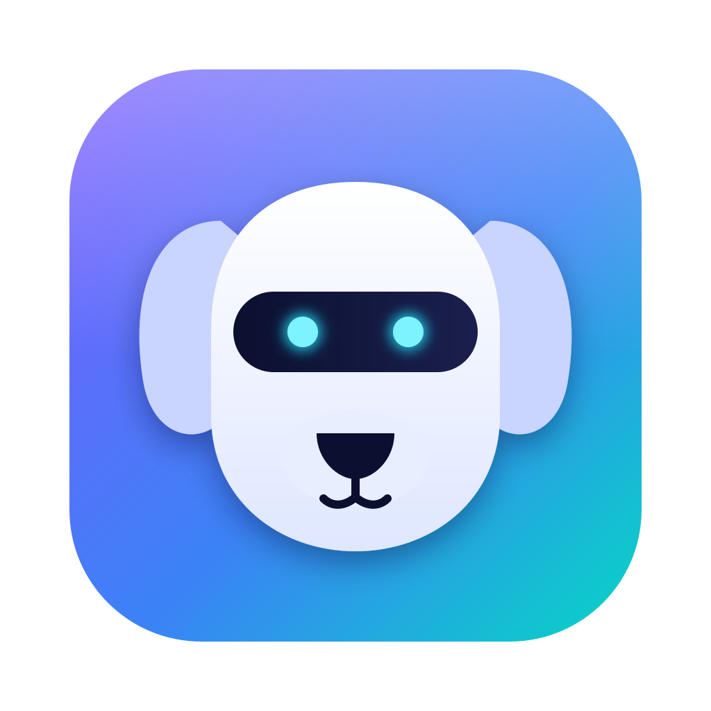

Cyberdog vs Cyberduck
Le navigateur de fichiers populaire pour SFTP, FTP et le stockage cloud.
Lire le comparatif →
CyberdogCYBERDOG
Cyberdog est une application de bureau gratuite et open source qui réunit un explorateur de fichiers SFTP, un terminal et un tableau de santé des serveurs dans une seule fenêtre, sur macOS, Windows et Linux. Ces pages expliquent, fonction par fonction et sans cacher les points forts des autres, comment il se compare aux outils que vous utilisez peut-être aujourd’hui.
macOS, Windows & Linux · Gratuit · MIT
Le navigateur de fichiers populaire pour SFTP, FTP et le stockage cloud.
Lire le comparatif →Le client SSH multi-appareils avec synchronisation et offres d’équipe.
Lire le comparatif →Le client SFTP de référence sous Windows, fort en scripts.
Lire le comparatif →Cyberduck, Termius et WinSCP sont des marques de leurs propriétaires respectifs. Cyberdog est un projet indépendant, sans lien avec eux et non approuvé par eux.